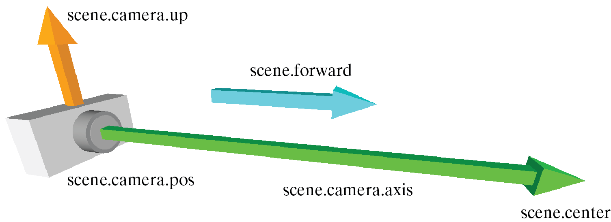

Controlling One or More VPython Canvases
Initially, there is one 3D VPython canvas named scene. Display objects do not create windows on the screen unless they are used, so if you immediately create your own canvas early in your program you will not need to worry about scene. If you simply begin creating objects such as sphere they will go into scene.
canvas() Creates a canvas with the specified attributes, makes it the selected canvas, and returns it. For example, the following creates another VPython canvas 600 by 200, with 'Examples of Tetrahedrons' in the title above the canvas, with the center of the canvas being vector(5,0,0), and with a background color of cyan filling the window.
scene2 = canvas(title='Examples of Tetrahedrons',
width=600, height=200,
center=vector(5,0,0), background=color.cyan)
Selecting a canvas: By default, any objects that you create go into the most recently created canvas, such as scene. If you create another canvas cvs, new objects will go into the cvs canvas. You can later execute scene.select() to make the scene canvas the one that new objects go into. You can find out which canvas is selected: current = canvas.get_selected() returns a reference to the canvas into which objects are currently being created. You can also specify which canvas to use when creating an object, as in box(canvas=cvs, .....).
In GlowScript VPython you can say canvas.selected = cvs, or current = canvas.selected, but unfortunately it doesn't seem possible to implement this syntax in VPython 7, so for compatibiity between GlowScript VPython and VPython 7 you may wish to use cvs.select() and canvas.get_selected() in GlowScript programs.
Here is a summary of what determines in which of several possible 3D canvases an object such as a box or sphere will be placed:
scene = canvas() # automatic; you don't need to say this
box(...) # will appear in the canvas named "scene"
sphere(canvas=scene, ...) # will also appear in "scene"
c2 = canvas(width=200, height=100, title='A second canvas')
box(...) # will appear in the canvas named "c2"
sphere(canvas=c2, ...) # will also appear in "c2"
cone(canvas=scene, ...) # will appear in "scene"
The key point is that after creating a canvas, 3D objects will by default be placed in the most recently created canvas, unless you explicitly specify a different canvas for the object.
General-purpose options
width, height Width and height of the canvas area in pixels. Defaults are 640 and 400. Can be specified when creating the canvas, as in the example above, or set or changed later.
align Set to "left" (canvas forced to left side of window), "right" (canvas forced to right side of window), or "none" (the default alignment). If you have a single canvas, setting align to "left" causes the canvas caption to be displayed to the right of the canvas. If you want to place a graph to the right of a canvas, set the canvas align attribute to the string "left" and the graph align attribute to the string "right". If the window is too narrow, the object that is on the right will be displayed below the other object. If you want to place a graph to the right of the canvas but keep the canvas caption underneath the canvas, create the graph first with align set to "right" and activate the graph by plotting something in it, then create the canvas without specifying its value of align. Another option is to specify align='left' for all canvases and graphs, in which case they will abut each other.
resizable If True (the default) the user can resize the canvas. If C is a canvas that is resizable, then C.bind('resize', R) will execute the function R when the user resizes that canvas. If R has the form def R(ev):, then ev.event will be 'resize' and ev.canvas will be the canvas C.
background Set color to be used to fill the canvas; default is black.
ambient Color of nondirectional ("ambient") lighting. Default is color.gray(0.2).
lights List of light
objects created for this canvas. By default, scene.lights is this list:
[distant_light(direction=vec( 0.22, 0.44, 0.88), color=color.gray(0.8)),
distant_light(direction=vec(-0.88, -0.22, -0.44),
color=color.gray(0.3))]
These are equivalent to the default lights that are automatically created for you. For how to create your own distant and local lights, see Lighting. The lights can be changed only after creating the canvas. You can eliminate the lights by setting scene.lights = [], an empty list, then create your own lights. To change the color of the first of the two default lights, do this, where 0 refers to the first of the two lights:
scene.lights[0].color = color.red
objects A list of all the visible objects in the canvas; invisible objects and lights are not listed (scene.lights is a list of existing lights). For example, the following makes all visible boxes in the scene red:
for obj in scene2.objects:
if isinstance(obj, box):
obj.color = color.red
visible Setting scene.visible = False means that no objects are displayed, until scene.visible is set True again.
delete() Deletes all the objects in this canvas and then deletes the canvas itself
capture(filename) Sends to your Download folder a png screen shot of the canvas. If filename is the string "boxes" or "boxes.png" the file will be named "boxes.png". Because label objects are displayed in a separate 2D transparent canvas in front of the 3D canvas, labels are not displayed in a captured scene. If you need text to be part of the captured scene, use the 3D text() object.
To obtain the current location of the camera, see below for details of scene.camera.pos.
camera.follow If you say scene.camera.follow(ball), the center of the scene will continually be reset to the current position of the ball object. To stop following the object, execute scene.camera.follow(None).
Instead of specifying an object to follow, you can provide a function of your own:
def f():
return 2*ball.pos
scene.camera.follow(f)
Alternatively, in GlowScript VPython you can specify an "anonymous" (unnamed) function, though this does not work in true Python:
scene.camera.follow(def ():
return 2*ball.pos
)
pixel_to_world Gives the width of a pixel in "world" coordinates (that is, the coordinates you use to position objects). This is read-only; you cannot set it. It is determined from the current value of scene.range. An example of its use is that if you want the radius of a curve object to be 5 pixels, set the radius to 5*scene.pixel_to_world.
Here are canvas options to wait for canvas updates:
scene.waitfor("redraw") Wait for the start of the next update of the canvas by the web browser
scene.waitfor("draw_complete") Wait for the end of the next update of the canvas by the web browser
Displaying text
You can use the label object to display text on the canvas. You can also place a title just above the canvas and/or a caption just below when you create a canvas:
canvas(title='Some title', caption='A caption')
After a canvas has been created you can change the title with scene.title = "Hello" or the caption with scene.caption = "Hello":
scene.caption = "Hello"
sleep(3) # wait for 3 seconds
scene.caption = "Goodbye"
You can put end-of-line markers ("\n") in the text to make multiline displays, or use the Python triplequote form to make a paragraph:
scene.caption = '''This is a
multiline paragraph with
newlines.'''
HTML: You can include html directives such as this: <b>This is bold.</b>
You can append more text to the title or caption (you can also use this form initially, as the caption and title start out as zero-length strings):
scene.append_to_title("Now <b>click the box</b>.")
scene.append_to_caption("See the <i>effect?</i>")
In these append operations you can also use forms like this, where V is some variable (see text output for details):
( "There are {:.1f} {}.".format(V, 'liters) )
( "There are", V, "liters" )
The wtext object lets you place dynamically modifiable text in the middle of the caption or title of a canvas.
scene.wrapper is the web page component which contains the canvas and its overlay (the overlay is a 2D canvas on which label objects and the prompt generated by scene.pause() are displayed). For example, scene.align = 'left' is equivalent to scene.wrapper.css('float', 'left') to force the canvas+overlay to the left side of the web page. Similarly, if you have a graph named g, scene.align = 'right' is equivalent to g.wrapper.css('float', 'right').
Similarly, scene.canvas refers to the 3D canvas and scene.elements refers to the 3D canvas and the 2D overlay.
Using jQuery
If you use jQuery to display widgets (buttons, sliders, menus), see this documentation on how to reference the title, caption, and print regions of the page.
Controlling the view
Here is a diagram that shows the relationship among the quantities discussed below that affect how the scene appears to the viewer:

center Location at which the camera continually looks, even as the user rotates the position of the camera. If you change center, the camera moves to continue to look in the same direction toward the new center, unless you also change forward (see next attribute). Default vector(0,0,0).
forward Vector pointing in the same direction as the camera looks (that is, from the current camera location, given by scene.camera.pos, toward scene.center). When forward is changed, either by program or by the user using the mouse to rotate the camera position, the camera position changes to continue looking at center. Default vector(0,0,-1). Its magnitude is not significant.
fov Field of view of the camera in radians. This is defined as the maximum of the horizontal and vertical fields of view. You can think of it as the angular size of an object of size range, or as the angular size of the longer axis of the window as seen by the user. Default pi/3.0 radians (60 degrees).
range The extent of the region of interest to the left or right of center. Setting range to 10 means that scene.center.x+scene.range will be at the right edge of a square window. A sphere of radius 10 will fill the window. A cubical box whose half-width is 10 will overfill the window, because the front of the box in 3D appears larger than the xy plane passing through scene.center, unless the field of view is very small.
up A vector representing world-space up. This vector will always project to a vertical line on the screen (think of the camera as having a "plumb bob" that keeps the top of the screen oriented toward up). The camera also rotates around this axis when the user rotates "horizontally". By default the y axis is the up vector.
There is an interaction between up and forward, the direction that the camera is pointing. By default, the camera points in the -z direction vector(0,0,-1). In this case, you can make the x or y axes (or anything between) be the up vector, but you cannot make the z axis be the up vector, because this is the axis about which the camera rotates when you set the up attribute. If you want the z axis to point up, first set forward to something other than the -z axis, for example vector(1,0,0).
autoscale = False no automatic scaling (set range explicitly); autoscale = True automatic scaling (default). It is often useful to let VPython make an initial canvas with autoscaling, then turn autoscaling off to prevent further automated changes.
userzoom = False user cannot zoom in and out of the scene
userzoom = True user can zoom (default)
userspin = False user cannot rotate the scene
userspin = True user can rotate (default)
userpan = False user cannot pan the scene
userpan = True user can pan (default)
Controlling the view using scene.camera
The mechanisms described above for controlling the view are designed to try to make sure that the objects are visible no matter how the user rotates or zooms the view, because the camera direction is always automatically adjusted to point toward scene.center, which by default is at the origin, and scene.range is automatically adjusted to correspond to the user zoom.
However, if you want to "fly" through the scene, with scene.center necessarily varying but zoom held constant, it is more convenient to move and point the camera directly. WARNING: When you take direct control of the camera, there is increased risk of seeing nothing, due to unintentionally pointing the camera away from the objects, or moving the camera far away from the objects.
An example of controlling the camera directly is the fly-through in the program Stonehenge, in which changing scene.camera.pos (the location of the camera) and scene.camera.axis (the direction the camera is pointing) is a convenient way to move through the scene.

scene.camera.pos The current
location of the camera, whether due to your own settings, autoscaling, or as positioned by the user, is scene.camera.pos.
For example, mag(scene.center - scene.camera.pos) is the distance from the current position of the
camera to the center of the scene. The vectors scene.camera.pos and scene.mouse.ray together define all of the
3D points under the mouse cursor.
You can place the camera where you want it by executing scene.camera.pos = vector(x,y,z). When you set the camera position in this way, scene.center is reset to the location scene.camera.pos + scene.camera.axis. The effect is that the camera continues to point in the same direction as before, but from a new location.
scene.camera.axis The current
direction that the camera is pointing, whether due to your own settings, autoscaling, or as positioned by the user, is scene.camera.axis, which is equal to scene.center - scene.camera.pos; it points from the camera to scene.center.
When you change scene.camera.axis, scene.camera.pos is unaffected, but scene.center is reset to the location scene.camera.pos + scene.camera.axis, and scene.forward is reset to norm(scene.camera.axis).
scene.up Changing scene.up rotates the display around the z axis and would be appropriate for example if you imagine the camera is attached to an airplane that rotates around its own axis in a turn or barrel roll.
scene.camera.rotate(angle=..., axis=..., origin=...) As with other VPython objects, you can rotate the camera by an angle in radians, about a specified axis (which by default is scene.camera.axis), relative to a specified origin (which by default is scene.camera.pos).